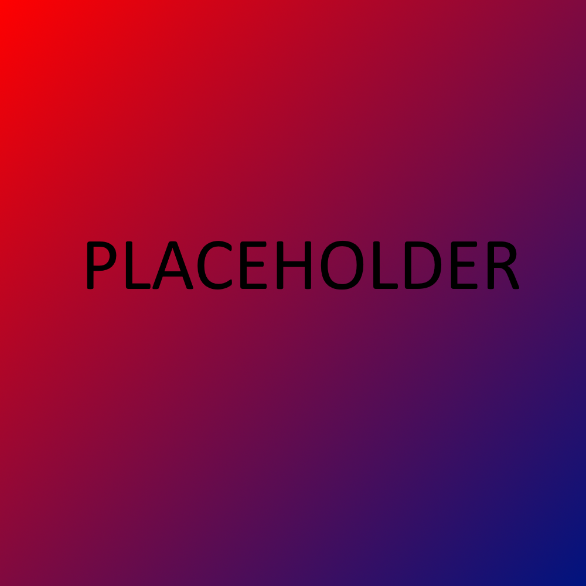

Mijn naam is Roy Stam, ik ben 18 jaar oud en ik woon in Lelystad. Ik studeer Software Development op het ROC Flevoland MBO College in Almere Buiten. Ik heb gewerkt met Java, Unity, C#, MySQL, ERDs en HTML/CSS. Ik kan erg perfectionistisch zijn over mijn werk omdat ik veel geef om kwaliteit. Ik werk veel aan de details zodat mijn werk er professioneel uit ziet. Ik doe graag mijn best om een goed product te kunnen leveren.
(Op mijn GitHub staan opdrachten voor school, inclusief de code van mijn projecten op de "Mijn werk" pagina.)